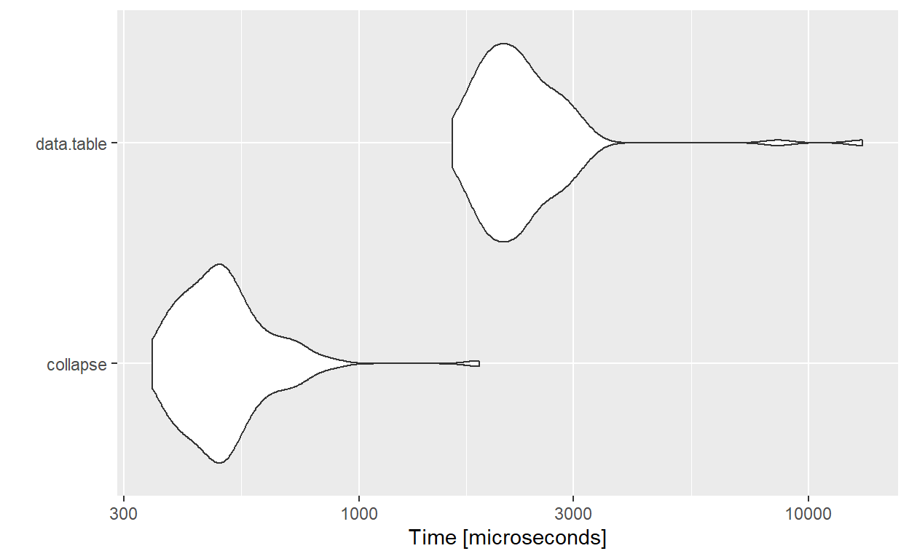
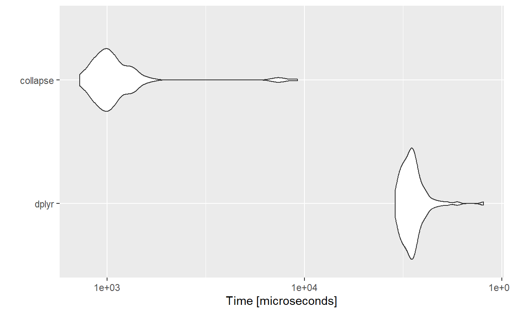

collapse 패키지를 소개하고 data.table, dplyr, plm 패키지들과 비교하여 파악해보겠습니다.
R의 고급 데이터 변환 및 통계 컴퓨팅을 위한 C/C++ 기반 패키지입니다.
유연하고 간결한 구문을 통해 매우 빠르고 클래스에 구애받지 않습니다,
기본 R, ‘dplyr’, ‘tibble’, ‘data.table’, ‘sf’, ‘plm’ 과 잘 통합됩니다.
collapse 패키지에 있는 기본 예제 파일을 불러오겠습니다.
#load file
head(wlddev)#load file
head(GGDC10S)# 변수의 클래스
namlab(wlddev, class = TRUE)
# 빠르고 상세한 통계 설명(생략)
descr ( wlddev )
# 깔끔한 데이터 프레임으로 변환
head ( as.data.frame ( descr ( wlddev ) ) )# 특정 열의 기술통계량
qsu(wlddev, cols = 9:12, higher = TRUE) # higher 는 왜도와 첨도| N | Mean | SD | Min | Max | Skew | Kurt | |
|---|---|---|---|---|---|---|---|
| PCGDP | 9470 | 1.204878e+04 | 1.907764e+04 | 1.320776e+02 | 1.960614e+05 | 3.1276269 | 17.115442 |
| LIFEEX | 11670 | 6.429630e+01 | 1.147642e+01 | 1.890700e+01 | 8.541707e+01 | -0.6747681 | 2.671769 |
| GINI | 1744 | 3.853412e+01 | 9.200604e+00 | 2.070000e+01 | 6.580000e+01 | 0.5960328 | 2.532903 |
| ODA | 8608 | 4.547201e+08 | 8.687127e+08 | -9.976800e+08 | 2.567156e+10 | 6.9831538 | 114.889041 |
# 지역별 열9:12에 따른 기술통계량
qsu(wlddev, by = ~region, cols = 9:12, vlabels = TRUE, higher = TRUE), , PCGDP: GDP per capita (constant 2010 US$)
N Mean SD Min
East Asia & Pacific 1467 10513.2441 14383.5507 132.0776
Europe & Central Asia 2243 25992.9618 26435.1316 366.9354
Latin America & Caribbean 1976 7628.4477 8818.5055 1005.4085
Middle East & North Africa 842 13878.4213 18419.7912 578.5996
North America 180 48699.76 24196.2855 16405.9053
South Asia 382 1235.9256 1611.2232 265.9625
Sub-Saharan Africa 2380 1840.0259 2596.0104 164.3366
Max Skew Kurt
East Asia & Pacific 71992.1517 1.6392 4.7419
Europe & Central Asia 196061.417 2.2022 10.1977
Latin America & Caribbean 88391.3331 4.1702 29.3739
Middle East & North Africa 116232.753 2.4178 9.7669
North America 113236.091 0.938 2.9688
South Asia 8476.564 2.7874 10.3402
Sub-Saharan Africa 20532.9523 3.1161 14.4175
, , LIFEEX: Life expectancy at birth, total (years)
N Mean SD Min Max
East Asia & Pacific 1807 65.9445 10.1633 18.907 85.078
Europe & Central Asia 3046 72.1625 5.7602 45.369 85.4171
Latin America & Caribbean 2107 68.3486 7.3768 41.762 82.1902
Middle East & North Africa 1226 66.2508 9.8306 29.919 82.8049
North America 144 76.2867 3.5734 68.8978 82.0488
South Asia 480 57.5585 11.3004 32.446 78.921
Sub-Saharan Africa 2860 51.581 8.6876 26.172 74.5146
Skew Kurt
East Asia & Pacific -0.856 4.3125
Europe & Central Asia -0.5594 4.0434
Latin America & Caribbean -1.0357 3.9379
Middle East & North Africa -0.8782 3.3054
North America -0.1963 1.976
South Asia -0.2623 2.1147
Sub-Saharan Africa 0.1452 2.7245
, , GINI: Gini index (World Bank estimate)
N Mean SD Min Max Skew
East Asia & Pacific 154 37.7571 5.0318 27.8 49.1 0.3631
Europe & Central Asia 798 31.9114 4.5809 20.7 48.4 0.2989
Latin America & Caribbean 413 49.9557 5.4821 34.4 63.3 -0.0386
Middle East & North Africa 91 36.0143 5.2073 26 47.4 0.0241
North America 49 37.4816 3.6972 31 41.5 -0.4282
South Asia 46 33.8804 3.9898 25.9 43.8 0.4205
Sub-Saharan Africa 193 44.6606 8.2003 29.8 65.8 0.6598
Kurt
East Asia & Pacific 2.3047
Europe & Central Asia 2.5254
Latin America & Caribbean 2.3631
Middle East & North Africa 1.9209
North America 1.4577
South Asia 2.7748
Sub-Saharan Africa 2.8451
, , ODA: Net official development assistance and official aid received (constant 2018 US$)
N Mean SD
East Asia & Pacific 1537 352'017964 622'847624
Europe & Central Asia 787 402'455286 568'237036
Latin America & Caribbean 1972 172'880081 260'781049
Middle East & North Africa 1105 732'380009 1.52108993e+09
North America 39 468717.916 10'653560.8
South Asia 466 1.27049955e+09 1.61492889e+09
Sub-Saharan Africa 2702 486'371750 656'336230
Min Max Skew
East Asia & Pacific -997'679993 4.04487988e+09 2.722
Europe & Central Asia -322'070007 4.34612988e+09 3.1305
Latin America & Caribbean -444'040009 2.99568994e+09 3.3259
Middle East & North Africa -141'789993 2.56715605e+10 6.6304
North America -15'869999.9 61'509998.3 4.8602
South Asia -247'369995 8.75425977e+09 1.7923
Sub-Saharan Africa -18'409999.8 1.18790801e+10 4.5456
Kurt
East Asia & Pacific 11.5221
Europe & Central Asia 15.2525
Latin America & Caribbean 22.4569
Middle East & North Africa 79.2238
North America 29.3092
South Asia 6.501
Sub-Saharan Africa 48.8447collapse::fselect와 dplyr::select는 유사하지만 fselect가 x100배 정도 빠릅니다.
fselect는 변수 이름을 포함하는 표현식을 사용하여 변수를 선택하는 데 사용할 수 있습니다.
# collapse::fselect, dplyr::select 비교
mb <- microbenchmark(fselect = collapse::fselect(wlddev, country, year, PCGDP:ODA),
select = dplyr::select(wlddev, country, year, PCGDP:ODA))
mbUnit: microseconds
expr min lq mean median uq max neval cld
fselect 6.4 9.3 19.814 19.0 25.70 81.3 100 a
select 2331.6 2521.7 3296.585 2857.5 3491.15 20570.9 100 b# 컬럼명의 대한 정보
fselect(wlddev, PCGDP:POP, return = "named_indices")| x | |
|---|---|
| PCGDP | 9 |
| LIFEEX | 10 |
| GINI | 11 |
| ODA | 12 |
| POP | 13 |
ss(wlddev, 1:2, 1:5) # fsubset(wlddev, 1:2, 1:5) 가능하지만 추천하지 않습니다.| country | iso3c | date | year | decade |
|---|---|---|---|---|
| Afghanistan | AFG | 1961-01-01 | 1960 | 1960 |
| Afghanistan | AFG | 1962-01-01 | 1961 | 1960 |
roworder는 dplyr::arrange와 유사하게 빠르고 data.table::setorder 와 같이 “-변수”를 내림차순 정렬로 출력합니다.
data.table::setorder와 대조적으로, roworder는 데이터 프레임을 복사본을 생성할 수 있습니다. 하지만 복사본이 필요하지 않으면, data.table::setorder가 더 빠릅니다.
| country | iso3c | date | year | decade | region | income | OECD |
|---|---|---|---|---|---|---|---|
| American Samoa | ASM | 2021-01-01 | 2020 | 2020 | East Asia & Pacific | Upper middle income | FALSE |
| Australia | AUS | 2021-01-01 | 2020 | 2020 | East Asia & Pacific | High income | TRUE |
| country | iso3c | date | year | decade | region | income | OECD |
|---|---|---|---|---|---|---|---|
| Albania | ALB | 1961-01-01 | 1960 | 1960 | Europe & Central Asia | Upper middle income | FALSE |
| Albania | ALB | 1962-01-01 | 1961 | 1960 | Europe & Central Asia | Upper middle income | FALSE |
| country | iso3c | date | year | decade | region | income | OECD |
|---|---|---|---|---|---|---|---|
| Botswana | BWA | 1961-01-01 | 1960 | 1960 | Sub-Saharan Africa | Upper middle income | FALSE |
| Botswana | BWA | 1962-01-01 | 1961 | 1960 | Sub-Saharan Africa | Upper middle income | FALSE |
ftransform 새 열을 계산하거나 기존 열을 수정 및 삭제하는 데 사용할 수 있으며 항상 전체 데이터 프레임을 반환합니다.
ftransform은 base::transform 데이터 프레임 및 목록 의 향상된 버전입니다.
# 형식
## ftransform(.data, ...) # .data 는 데이터프레임 또는 컬럼명
# ... 은 columns = value로 value 값에는 다양한 결합이 가능
# 예시
ftransform(wlddev, LIFEEX_INT = floor(LIFEEX), # 열 추가
year = as.integer(year), # 정수로 변환
LIFEEX = NULL) %>% tail(2) # 해당 열 삭제
wlddev %>% ftransformv(9:12, log) %>% tail(2) # ftransformv 함수를 사용하여 특정 칼럼을 변형하는 수정(생략)fcompute(wlddev, LIFEEX_INT = floor(LIFEEX), year = as.integer(year)) %>% tail(2)# 형식
## fgroup_vars(X, return = "data") # X는 그룹화된 데이터 프레임
# return = data, 그룹화된 모든 데이터
# return = names, 컬럼명
# return = indices 인덱스
# 예시
fgroup_vars(cwlddev, return ="names")| x |
|---|
| year |
| country |
| PCGDP |
| LIFEEX |
| GINI |
| ODA |
| POP |
[1] 1.20244005 0.78729230 0.05327661 0.90312413 1.28282523 2.49906593
[7] 0.33566824 1.12707962 0.43725914 1.05024743 1.15899434 0.28088461
[13] 0.66057328 0.91779104 0.13256887 0.21365645 0.35897103 2.22500746
[19] 1.64250817 0.80205372 0.30740393 1.12019570 0.84924632 0.84458164
[25] 0.61090135 0.07429922 0.61268853 0.28579498 0.76370989 0.96149203
[31] 0.43227441 1.47708702# 가중치 평균
fmean(mtcars, w = weights) mpg cyl disp hp drat
21.1381478 5.9817795 208.3092929 130.9269763 3.6381940
wt qsec vs am gear
3.0658560 18.0864251 0.5317187 0.4286070 3.6871944
carb
2.5729020 # 가중치 중간값
fmedian(mtcars, w = weights) mpg cyl disp hp drat wt qsec vs
19.200 6.000 167.600 110.000 3.730 3.215 18.300 1.000
am gear carb
0.000 4.000 2.000 # 가중치 표준 편차
fsd(mtcars, w = weights) mpg cyl disp hp drat
6.0670496 1.6760666 107.6013748 62.1047958 0.6097825
wt qsec vs am gear
0.7768637 1.7359932 0.5087166 0.5045203 0.6811318
carb
1.5159005 # 가중치 최빈값
fmode(mtcars, w = weights) mpg cyl disp hp drat wt qsec vs am gear
18.10 4.00 225.00 110.00 2.76 3.44 20.22 1.00 0.00 4.00
carb
2.00 mpg cyl disp hp drat wt qsec
4 26.66364 4 105.1364 82.63636 4.070909 2.285727 19.13727
6 19.74286 6 183.3143 122.28571 3.585714 3.117143 17.97714
8 15.10000 8 353.1000 209.21429 3.229286 3.999214 16.77214
vs am gear carb
4 0.9090909 0.7272727 4.090909 1.545455
6 0.5714286 0.4285714 3.857143 3.428571
8 0.0000000 0.1428571 3.285714 3.500000# qDT는 벡터나 행렬등을 데이터테이블로 변환하는 함수
microbenchmark(qDT(wlddev), as.data.table(wlddev))Unit: microseconds
expr min lq mean median uq max neval
qDT(wlddev) 6.8 7.85 13.780 11.05 15.6 49.2 100
as.data.table(wlddev) 202.0 456.90 675.448 480.85 555.0 7300.2 100
cld
a
b# 데이터 프레임에서 ss 함수를 사용하는 것이 효율적
microbenchmark(base = wlddev[1:10, 1:10],
collapse1= fsubset(wlddev, 1:10, 1:10),
collapse2= ss(wlddev, 1:10, 1:10))Unit: microseconds
expr min lq mean median uq max neval cld
base 111.6 124.8 147.781 133.90 151.70 319.0 100 c
collapse1 14.7 17.3 21.956 19.25 23.25 67.6 100 b
collapse2 3.9 4.9 6.668 5.80 7.25 33.1 100 a # 열 결합
microbenchmark(base = cbind(wlddev, wlddev),
collapse = add_vars(wlddev, wlddev))Unit: microseconds
expr min lq mean median uq max neval cld
base 43.4 45.5 57.485 52.85 56.15 217.1 100 b
collapse 7.4 9.0 17.496 9.70 11.35 721.0 100 a # collapse 와 data.table
DT <- qDT(wlddev)
mb1 <- microbenchmark(collapse = DT %>% gby(country) %>% get_vars(9:13) %>% fmean, # gby()는 fgroup_by()의 축약
data.table = DT[, lapply(.SD, mean, na.rm = TRUE), keyby = country, .SDcols = 9:13])
mb1Unit: microseconds
expr min lq mean median uq max neval cld
collapse 347.7 420.3 516.715 490.15 549.1 1849.2 100 a
data.table 1612.4 1935.5 2419.792 2182.95 2538.6 13161.5 100 bautoplot(mb1)
# collapse 와 dplyr
mb2 <- microbenchmark(dplyr = filter(wlddev, decade > 1980) %>%
select(country, iso3c, region, PCGDP:POP ) %>%
arrange(desc(country)) %>%
mutate(NEW = floor(LIFEEX)) %>%
group_by(country),
collapse = fsubset(wlddev, decade > 1980 ,country, iso3c, region, PCGDP:POP) %>%
roworder(-country) %>%
ftransform(NEW = floor(LIFEEX)) %>%
fgroup_by(country))
mb2Unit: microseconds
expr min lq mean median uq max neval
dplyr 28841.9 32181.40 35826.807 34596.95 36856.10 81011.4 100
collapse 727.6 912.15 1318.969 1016.20 1171.15 9242.6 100
cld
b
a autoplot(mb2)
collapse는 dplyr ,data.table 과 유사한 기능을 가지고 더 빠른 수행 속도를 발현할 수 있습니다.
‘fselect’는 ‘dplyr::select’와 다르게 데이터 값을 대체할 수 있습니다.
‘roworder’는 ‘data.table::setorder’ 와 같이 “-변수”를 내림차순 정렬로 출력합니다. 또한 복사본를 생성할 수 있습니다.
데이터 프레임에서는 ‘fsubset’보다 ‘ss’ 함수를 사용하는 것이 효율적입니다.
‘fcompute’는 ftransform 처럼 작동하지만 데이터를 수정하거나 추가하지 않고 변경된/계산된 열만 반환합니다.
‘fmeans’은 열별 평균뿐만 아니라, 그룹별 평균과 가중치 평균을 계산할 수 있습니다.
‘fnrow’는 ‘nrow’와 유사하지만, 데이터 프레임에서 빠른 속도로 수행 가능 합니다.
‘gby()’는 ‘fgroup_by()’의 축약형 입니다.
‘qDT’는 데이터 테이블로 빠르게 변환할 수 있는 함수입니다.
If you see mistakes or want to suggest changes, please create an issue on the source repository.
Text and figures are licensed under Creative Commons Attribution CC BY 4.0. Source code is available at https://github.com/zarathucorp/blog, unless otherwise noted. The figures that have been reused from other sources don't fall under this license and can be recognized by a note in their caption: "Figure from ...".
For attribution, please cite this work as
park (2022, July 25). Zarathu Blog: collapse 패키지 소개. Retrieved from https://blog.zarathu.com/posts/2022-07-25-collapse/
BibTeX citation
@misc{park2022collapse,
author = {park, beomsu},
title = {Zarathu Blog: collapse 패키지 소개},
url = {https://blog.zarathu.com/posts/2022-07-25-collapse/},
year = {2022}
}